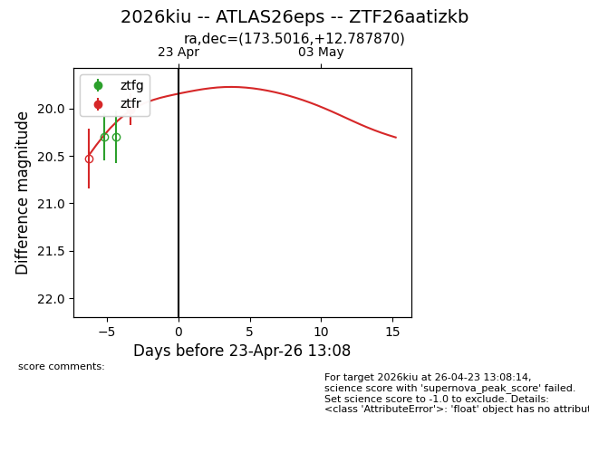
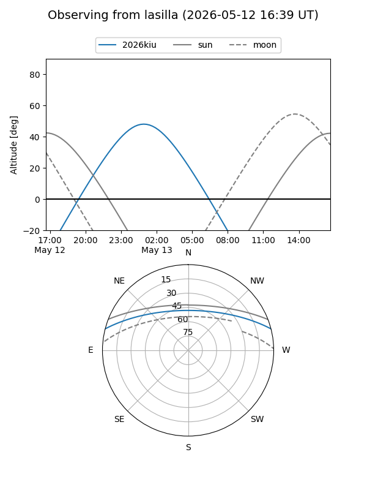
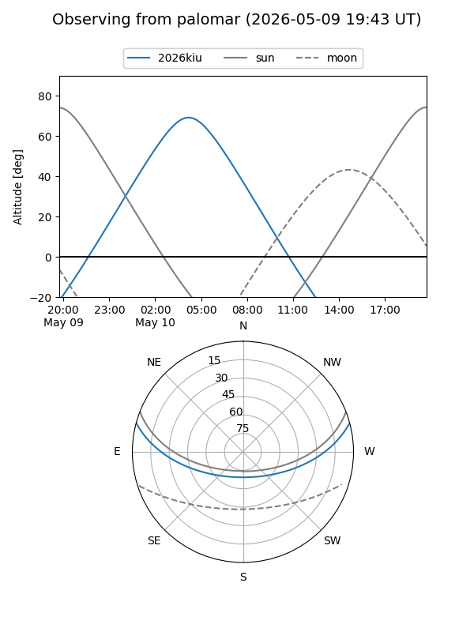
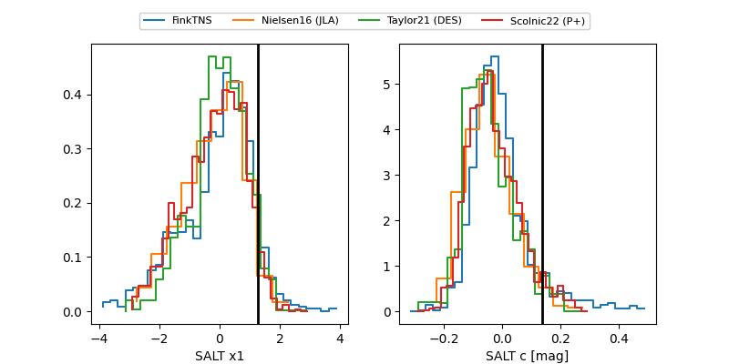

2026kiu
Target 2026kiu at 2026-04-23 13:09
Aliases and brokers:
FINK: link
Lasair: link
ALeRCE: link
TNS: link
YSE: link
alt names
ZTF26aatizkb (ztf,fink_ztf)
2026kiu (tns,yse)
ATLAS26eps (atlas)
Coordinates:
equatorial (ra, dec) = 173.5016,+12.78787
equatorial (HMS+DMS) = 11:34:00.37,+12:47:16.33
galactic (l, b) = (247.4778,+66.89323)
Flags:
Photometry:
last ztfr=20.01
1 ztfr detections
Lightcurve

Visibility


Additional plots
